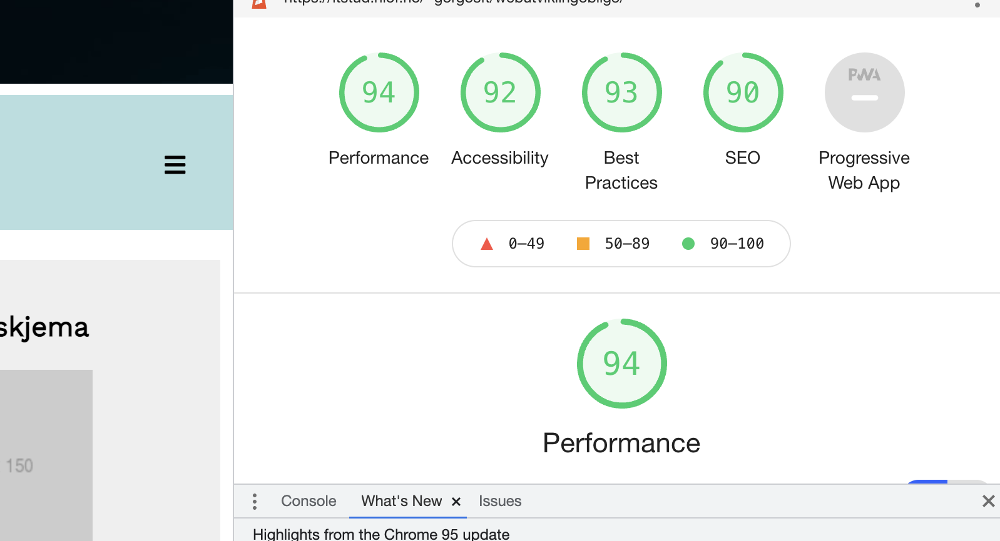
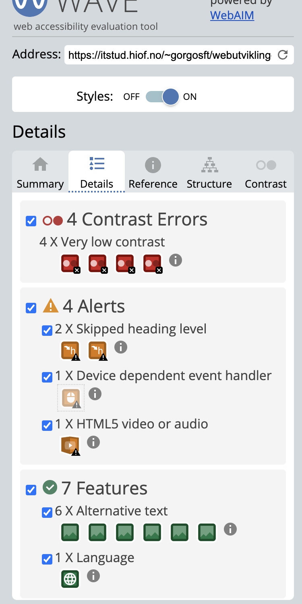
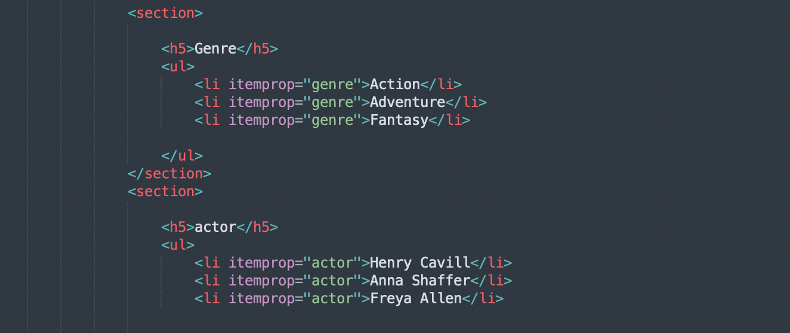

I HTML brukes et skjema for å angi et område på en Nettside som en bruker kan samhandle med for å sende inn informasjon. Koden defineres ved hjelp av et bestemt format. I skjemaet kan en rekke forskjellige innganger brukes, for eksempel enkle tekstfelt og avmerkingsbokser.
Les mer
Det er bare to typer medier som er i bruk, media = "skjerm" og media = "utskrift". Medietypen "skjerm" brukes til å angi at stilarket er for skjermen, mens "skrive ut" brukes til å lage en utskrivbar versjon av siden.
Les mer
Grid klare ting som flexbox ikke klarer, og flexbox klare ting som Grid kan få til. Man bruke dem sammen.
Les mer
Video og lydopptak kan være en av de beste god måter man kan formidle innhold på. Videoer og lydopptak blir brukt mye. Vi må gi alle tilgang til den samme innholdet, for å gjøre det så vi må ha innholdet også komme frem i form av tekst........
Les mer her om video og audio
Å ha en responsive desing i nettsiden er viktig. og ha en responsive nettsiden er ikke hvor fancy nettsiden er men heller at nettsiden skal tilpasses til de ulike skjermstørrelser.
Mer om Responsive wed design
CSS kan være morsomt å jobbe med, men stilark kan bli vedlig stor og kan bli litt vanskleig å lese når kuden blir for stor, og mer komplekse. Her kan en forbehandler kom til hjelp.
Mer om Sass

Her så her jeg testa og fiksa på min seo. jeg har dukmentert alt jeg har gjør og alle problemer som up stå. jeg har tat med skjærmbilder også
Se min SEO

Her så her jeg lagt netsiden min in i WedAim og deretter jeg fiksa på contrast.
Webaim

Litt om Schema og hvordan man skriver det.
Schema